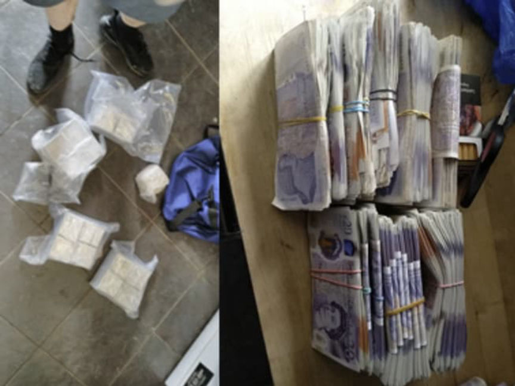
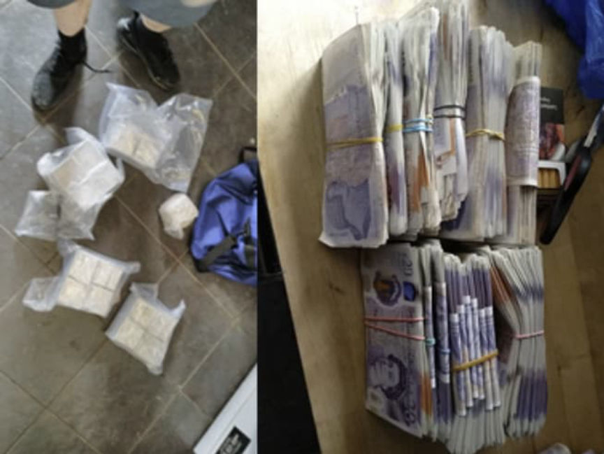

EncroChat: Coke Dealer Sentenced to Almost 13 Years in Prison
~1 min read | Published on 2022-05-20, tagged Darkweb-Vendor, Drug-Bust using 217 words.
A drug dealer in the United Kingdom was sentenced to 12 years in prison for supplying cocaine, heroin, and cannabis, to people “across the country.”
Joseph Byrne, 44, of Knowsley, was sentenced to 12 years and nine months in prison after pleading guilty to conspiracy to supply class A and B drugs at Liverpool Crown Court.
“We will continue to keep this momentum going and pursue offenders who think they can lie undetected by using the darkweb, as we are taking action and bringing them to justice,” Merseyside Police Detective Inspector Chris Lowe said.
Merseyside Police arrested Byrne as a part of Operation Venetic; during the investigation into the encrypted communication service Encrochat, investigators identified Byrne as the person operating an Encrochat account under the username “Foxhedge.” Byrne used the account to facilitate the distribution of multiple kilograms of heroin, cocaine, and cannabis to buyers “from Liverpool to Wales.”

Police also learned that the dealer had grossed £349,000 within three months.
“Byrne’s guilty plea reinforces the strength of evidence we have in these type cases to convict those attempting to evade detection by utilizing encrypted devices. This latest sentencing, along with the other convictions that we have accomplished, highlights our success in arresting and convicting people,” Detective Inspector Chris Lowe said.
Joseph Byrne, 44, of Knowsley, was sentenced to 12 years and nine months in prison after pleading guilty to conspiracy to supply class A and B drugs at Liverpool Crown Court.
Joseph Byrne
“We will continue to keep this momentum going and pursue offenders who think they can lie undetected by using the darkweb, as we are taking action and bringing them to justice,” Merseyside Police Detective Inspector Chris Lowe said.
Merseyside Police arrested Byrne as a part of Operation Venetic; during the investigation into the encrypted communication service Encrochat, investigators identified Byrne as the person operating an Encrochat account under the username “Foxhedge.” Byrne used the account to facilitate the distribution of multiple kilograms of heroin, cocaine, and cannabis to buyers “from Liverpool to Wales.”

Drugs and cash seized by police during the investigation into Byrne
Police also learned that the dealer had grossed £349,000 within three months.
“Byrne’s guilty plea reinforces the strength of evidence we have in these type cases to convict those attempting to evade detection by utilizing encrypted devices. This latest sentencing, along with the other convictions that we have accomplished, highlights our success in arresting and convicting people,” Detective Inspector Chris Lowe said.